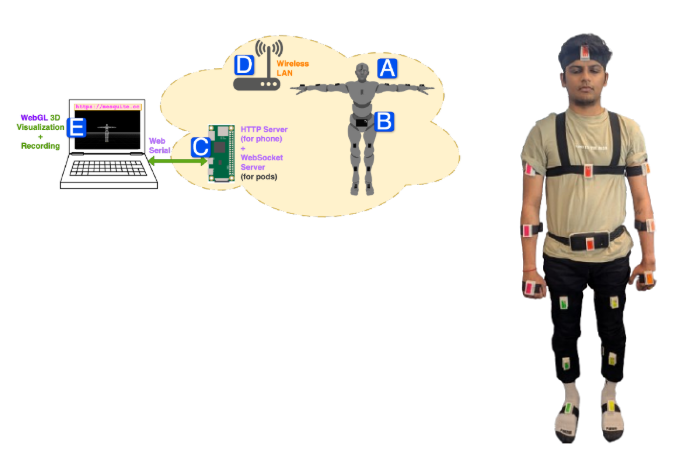
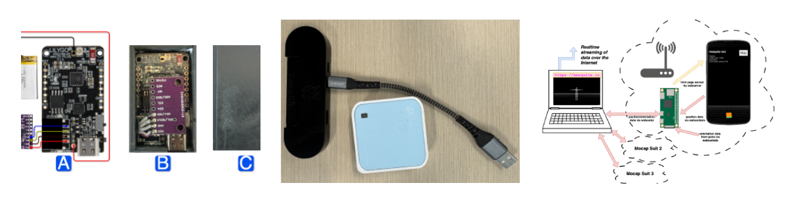
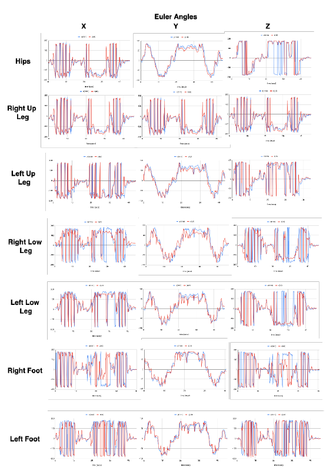
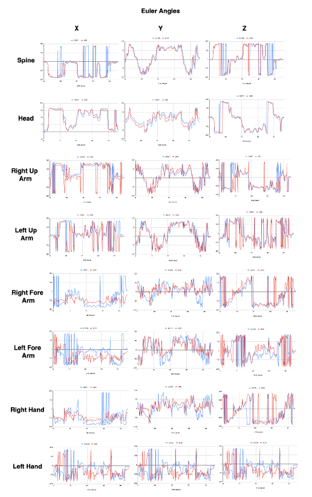

Graduate Research Assistant · Arizona State University
Advised by Dr. Tejaswi Gowda · Arizona State University

Mesquite is an open-source, low-cost motion capture system built around a distributed network of 15 wearable IMU sensor pods and a hip-worn smartphone for spatial anchoring. A Raspberry Pi Zero W serves as the central hub — aggregating orientation data from the pods, synchronizing it with the phone's WebXR SLAM world frame, and streaming the reconstructed skeleton to any WebSerial-compatible browser in real time.



Benchmarking against an OptiTrack optical system demonstrates angular accuracy within 2–5° for most joints and position drift under 2% over five minutes, while maintaining steady 32 FPS capture. This professional-grade performance is delivered at approximately 5% of the cost of commercial alternatives, confirming Mesquite's suitability for research, animation, and clinical applications.
Mesquite's affordability and portability enable its use in biomechanics and rehabilitation studies, indie game animation, healthcare monitoring, sports performance analysis, and educational settings. The system's open-source design invites community extension — ranging from hand-tracking modules to cloud-based analytics — making high-fidelity motion capture broadly accessible.
Here the orange skeleton is the existing system OptiTrack and the blue skeleton is for Mesquite:
All resources of the Mesquite are available on the GitHub repository.